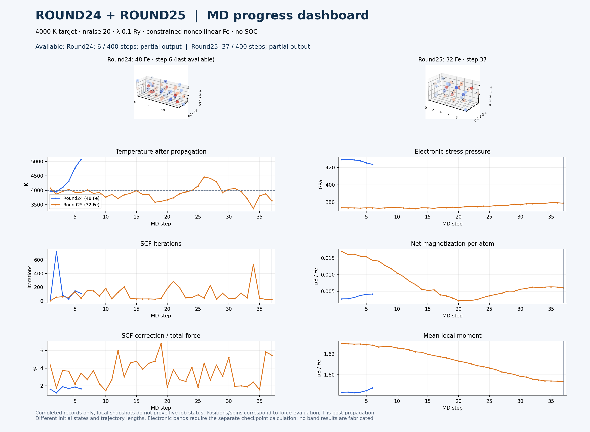

Electronic bands
Awaiting Jakar calculations. Run plot_bands.py after both band jobs to populate this panel. Curves will be folded supercell bands, not primitive BCC bands.

MD snapshots and electronic-band workflow

Awaiting Jakar calculations. Run plot_bands.py after both band jobs to populate this panel. Curves will be folded supercell bands, not primitive BCC bands.